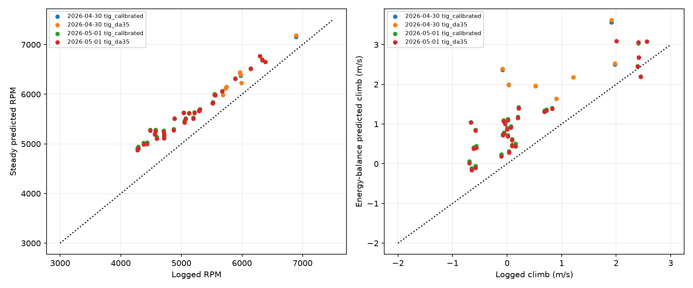

Fixed models scored at each recorded throttle, true airspeed and density. No parameters were refitted. Both models use the same supported windows. April 30 was held out from the original log fit; overlap between these logs and the cruise spreadsheet is unknown.
| date | model | windows | rpm_rmse | rpm_bias | climb_rmse_mps |
|---|---|---|---|---|---|
| 2026-04-30 | tig_calibrated | 7 | 359.29 | 350.39 | 1.53 |
| 2026-04-30 | tig_da35 | 7 | 367.93 | 359.07 | 1.55 |
| 2026-05-01 | tig_calibrated | 31 | 503.82 | 486.99 | 0.84 |
| 2026-05-01 | tig_da35 | 31 | 485.37 | 469.27 | 0.81 |

Climb is inferred from modeled thrust and the existing drag/energy balance with recorded acceleration and bank. This is not a coupled flight replay. Propeller coefficients, windmilling, electric assistance and aircraft configuration remain uncertain.